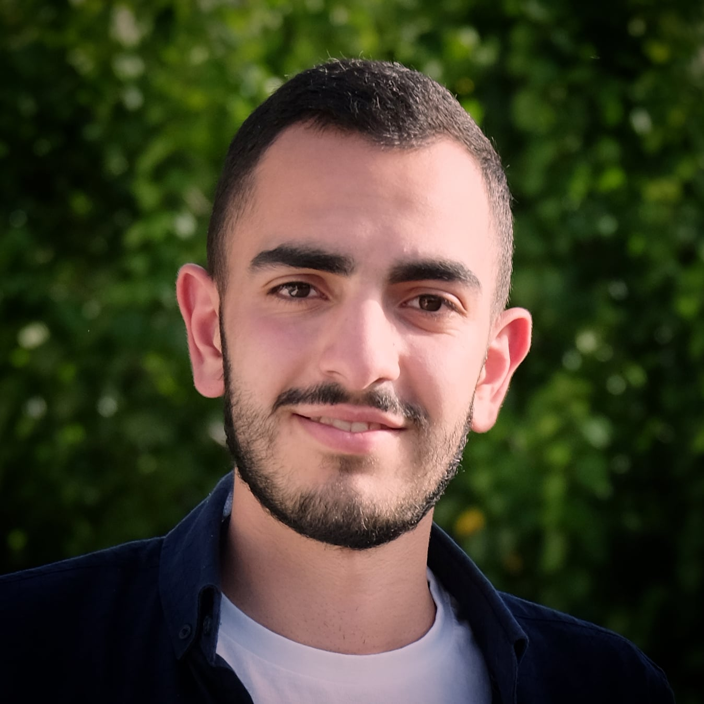

|  |
Jean BOU SERHAL
|
||
Compétences informatiquesLangages de Programmation : C++, C, Java, XML, Python Logiciels Microsoft Office 365, Adobe Lightroom et Photoshop |
ProfilEtudiant en L3 Méthodes Informatiques Appliquées à la Gestion des Entreprises En recherche d'un stage à partir de mai 2022 pour 8 semaines minimum (potentiellement suivi d'une alternance) |
||
Compétences linguistiquesFrançais : Avancé Anglais : Avancé Arabe : Avancé |
Savoir-êtreSens de la communication et capacité de négociation Sens de l'organisation et de la gestion Créativité et capacité d'adaptation Leadership Capacité à fédérer et à rédiger |
||
Formation |
|||
Licence en Informatique |
|||
Septembre 2020 - Présent (2022) |
parcours Méthodes Informatiques Appliquées à la Gestion des Entreprises - MIAGE.A l'Université Grenoble Alpes, France |
||
Septembre 2019 - Juin 2020 |
1ère année de licenceA l'Université Saint-Esprit de Kaslik - USEK, Liban |
||
2003 - Juin 2019 |
Double diplôme du Baccalauréat- Baccalauréat Libanais en Sciences de la Vie.- Baccalauréat Français Scientifique Spécialité Mathématiques.Mentions : Bien. Au Collège des Dominicaines de Notre Dame de la Délivrande, Araya, Liban |
||
Expérience |
|||
Octobre 2021 - Présent |
Etudiant Ambassadeur de l'Université Grenoble Alpes- Pour le service Liaison Lycée Université : promotion de l'offre de formation de l'UGA auprès des lycéens. - Echanges avec les lycéens afin de les guider et rassurer dans les choix parcours et la suite de leurs projets de formation. - Représentation de l'UGA lors des forums et des événementiels. |
||
Aoùt 2021 - Présent |
Agent d'accueil des étudiants à l'UGA (iCampus)- Assurer l'information et l'accompagnement des étudiants dans tous les aspects de leur vie étudiante jusqu'à la fin de leur cursus. - Accompagner les étudiants dans leurs projets : les guider vers les bons services (international, orientation, santé, entrepreunariat, Crous...). - Coordination avec les directions opérationnelles des établissements. |
||
Décembre 2019 - En pause |
Co-fondateur de la Startup "Treeboot"Initiative de protection des forêts en mettant en oeuvre les nouvelles technologies, notamment Internet of Things & Artificial Intelligence. Mon rôle est surtout managérial et relationnel : pitching, présentation du projet et du prototype auprès des investisseurs. |
||
Eté 2018 & Eté 2019 |
Manager de réception et comptabilité au resort "LeBleu de Hammana"- Chargé de caisse et de stocks – Comptabilité manuelle. - Accueil / Service clientèle. - Responsable des employés. - Contrôle de la qualité de l’eau et entretien du matériel et du lieu. |
||
Expériences de bénévolat |
|||
Janvier 2021 - Présent |
Membre dans l'Association des Scouts Unitaires de FranceChef du Clan. Formation : "CEP". |
||
Septembre 2007 - Septembre 2020 |
Membre dans l'Association des Scouts du LibanChef à la Troupe : responsable d'un groupe d'une trentaine de jeunes âgésentre 12 et 17 ans. Certification : " Premier Secouriste en Santé Mentale des Jeunes ". |